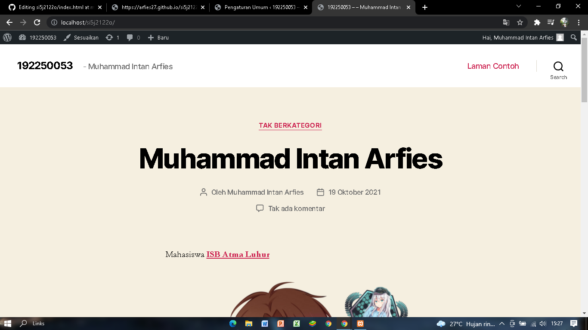
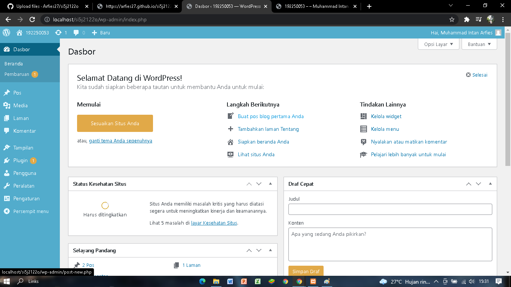

NIM : 1922500053
Nama : Muhammad Intan Arfies
Kel : SI5j
Hasil kesimpulan dari pertemuan 2 adalah :
-
Menjelaskan tata cara Post tugas di Github
-
Menjelaskan cara Import Tugas Dan Restore Tugas
-
Menjelaskan tentang front-end/halaman depan (untuk pengunjung web) dan Back-end/Dashboard (untuk admin web)
-
Menjelaskan tentang Dashboard
- Cara Login ke Dashboard (../wp-admin)
- Mengganti Profil Pengguna dan Password(Pengguna -> Profil)
- Menambah pengguna baru (Pengguna -> Tambah Baru)
- Pelanggan = Role paling lemah, dibutuhkan untuk entry data
- Kontributor = Penulis yang belum dipercaya oleh administrator. pos harus menunggu persetujuan dari editor atau administrator
- Penulis = penulis yang sudah dipercaya oleh administrator, pos tidak membutuhkan persetujuan, bisa mengedit posnya
- Editor = Tangan kanan administrator, bisa mengedit halaman
- Pengaturan (Pengaturan)
- pengaturan -> Umum = merubah judul situs, slogan, alamat WordPress , alamat Situs dan lain - lain
- Pengaturan -> Menulis = Kategori Pos
- Pengaturan -> Membaca = Berkaitan dengan pengujung, merubah tampilan pos - post di front-end
- Pengaturan -> Diskusi = pengaturan komentar
- Pengaturan -> Media = resize gambar untuk WordPress
- Pengaturan -> Permalink = Bentuk link
- Pengaturan -> Privasi = Pernyataan/Disclaimer
Tampilan Front-end:

Tampilan back end:
